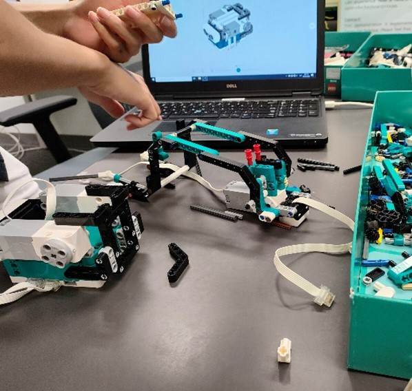
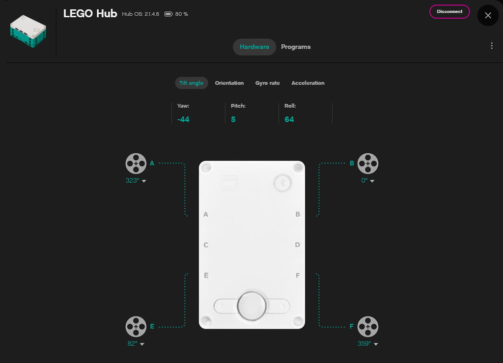

Student ID and Workload percentage
| Ting Siu Shing |
Yang Guangyulu |
Hong Binghui |
| 56201081
| 55721120 |
56177629 |
| 100% |
100% |
100% |
- Background
- We use the MINDSTORMS app, which is a software that offers a platform to write and create robot instructions to order it.
The Lego robot that we employ goes by the name "Tricky." We built our robot with motors and sensors and order it to pick up the ball and
score the slam dunk by using python programming.
- Application
- In addition to controlling robots by Python programming, Python can also be used for other applications such as web application development, game development,
artificial intelligence, data analysis, and many more.
- Main Functions
- Some crucial parts and functions are included in the MINDSTORMS app:
Motors: With motors, the robot can be powered to move at a fixed speed.
Distance sensor: This sensor can gauge how far away the closest obstruction is from it.
Color sensor: This sensor has the function of detecting the color of objects that are in front of the camera.
Hub: The hub is in charge of communicating program instructions to each motor and sensor.
- Building Lego Robot "Tricky"
- 
Experience
- Firstly, we assembled the robot and the basket to form the Tricky model according to MINDSTORMS’s LEGO tutorial.
- Secondly, we learnt the file Tutorial for Python and explore the Python functionalities of MINDSTORMS.
- Thirdly, we wrote our own code in Python. We reset the robot’s arm to a horizontal position. When the distance sensor senses the object is
closer than 6 cm, the motor will stop, lifting its arm to pick up the ball. After that, Tricky moves backwards for 30 cm, then lifting arm to score the slam dunk.
- Finally, we placed the robot, the basket and the basketball in their respective places and ran the code to record the robot's reaction
VIDEO DEMO-->
Dicovery
We discover there are many similarities between Scratch and Python. We can set the robot to do certain actions when certain conditions are met.
In Scratch, we can drag Control-wait until D is closer than 6 cm and Movement-stop moving in the Scripts area.
In Python, we write code: distance_sensor.wait_for_distance_closer_than(6,‘cm’) and movement_ motors . stop(). They achieved the same effect.
In addition, we found that the LEGO Hub itself is a program system which can accept input and produce output.

Python Code for Project